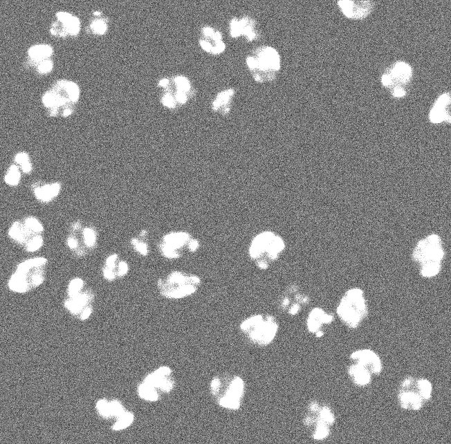
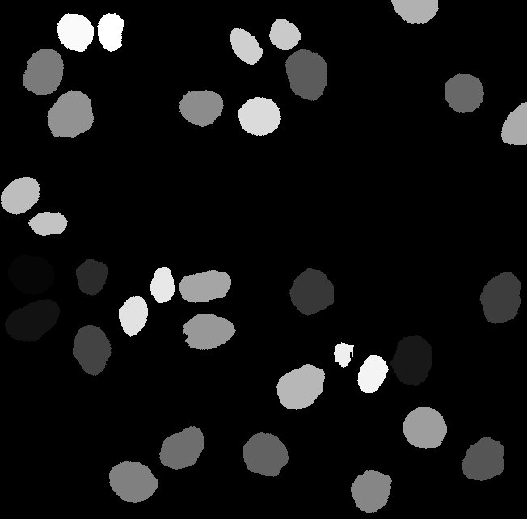

Broad Bioimage Benchmark Collection
Annotated biological image sets for testing and validation
Simulated HL60 cells (from the Cell Tracking Challenge)
Accession number BBBC035 · Version 1
Example images
-

-

Description of the biological application
These are synthetic images from the Cell Tracking Challenge. The images depict simulated nuclei of HL60 cells stained with Hoescht (training datasets). These synthetic images of HL60 cells provide an opportunity to test image analysis software by comparing segmentation results to the available ground truth for each time point. The number of clustered nuclei increases with time adding more complexity to the problem. This time-laps dataset can be used for simple segmentation or for nuclei tracking.
Images
Images synthetically produced by MitoGen, part of CytoPacq (http://cbia.fi.muni.cz/simulator/). Simulation of Zeiss Axiovert 100S with a Micromax 1300-YHS camera and Plan-Apochromat 40X/1.3 (oil) objective lens was chosen to produce the images. Time step (min): 29.
Please note that this dataset is the exact copy of the Fluo-N3DH-SIM+ dataset from the Cell Tracking Challenge. As such, the conditions on the use of the challenge datasets applies, see the bottom of the Cell Tracking Challenge's dataset page. Especially, we ask to cite this Nature Methods paper in any publication resulting from the use of this dataset. The dataset was obtained with permission and is licensed here under the Creative Commons license CC-BY.
- Width = 79.1101 - 80.7196 microns (639-652)
- Height = 43.2073 - 79.4816 microns (349-642)
- Depth = 59 microns (59)
BBBC035_v1_dataset.zip (3.18 GB)
Ground truth
Ground truth (training datasets)
BBBC035DatasetGroundTruth.zip (150.9 MB)
For more information
These images were generated by the Centre for Biomedical Image Analysis (CBIA) at Masaryk University, Czech Republic. Please contact David Svoboda and/or Vladimír Ulman for more information.
Published results using this image set
Ulman V, Maška M, Magnusson KE, Ronneberger O, Haubold C, Harder N, Matula P, Matula P, Svoboda D, Radojevic M, Smal I et al. An objective comparison of cell tracking algorithms. Nature Methods. 2017 Dec;14(12):1141. doi: 10.1038/nmeth.4473. PMID: 29083403 PMCID: PMC5777536
Svoboda D, Ulman V. MitoGen: A Framework for Generating 3D Synthetic Time-Lapse Sequences of Cell Populations in Fluorescence Microscopy. IEEE Trans Med Imaging. 2017 Jan;36(1):310–321. doi:10.1109/TMI.2016.2606545. PMID: 27623575
Recommended citation
"We used image set BBBC035v1 Ulman et al. 2018, available from the Broad Bioimage Benchmark Collection [Ljosa et al., Nature Methods, 2012]."
We also ask that you please cite this paper in any publications resulting from the use of this dataset:
Ulman V, Maška M, Magnusson KE, Ronneberger O, Haubold C, Harder N, Matula P, Matula P, Svoboda D, Radojevic M, Smal I et al. An objective comparison of cell tracking algorithms. Nature Methods. 2017 Dec;14(12):1141. doi: 10.1038/nmeth.4473. PMID: 29083403 PMCID: PMC5777536
Copyright
 These images are licensed under a
Creative Commons Attribution 3.0 Unported License
by Carlos Ortiz de Solórzano.
These images are licensed under a
Creative Commons Attribution 3.0 Unported License
by Carlos Ortiz de Solórzano.